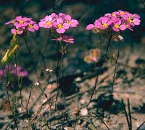

Stylidiaceae
Triggerplant Family
The Stylidiaceae family, commonly known as the triggerplant family, is a fascinating group of flowering plants primarily found in Australia. They are renowned for their unique pollination mechanism involving a sensitive 'trigger' (a fused column of stamens and style) that snaps forward to deposit or collect pollen when stimulated by an insect visitor.
Overview
Stylidiaceae belongs to the order Asterales, the same order as the massive Asteraceae (sunflower) family and Campanulaceae (bellflower) family. It comprises about six genera and over 240 species. The vast majority of species belong to the genus Stylidium, the triggerplants. The family's center of diversity is southwestern Western Australia, a global biodiversity hotspot, though species are also found elsewhere in Australia, New Zealand, Southeast Asia, and southern South America.
Members are typically small herbs or subshrubs adapted to nutrient-poor, often seasonally wet or arid environments. Many possess glandular hairs, leading to suggestions of protocarnivory (passively trapping insects for nutrient absorption) in some species. However, the most striking feature is the specialized floral column (gynostemium) that functions as a touch-sensitive trigger for pollination.
Ecologically, triggerplants are important components of heathlands, woodlands, and grasslands, particularly in Australia. Their unique pollination strategy represents a remarkable example of evolutionary adaptation for reproductive success in diverse environments.
Quick Facts
- Scientific Name: Stylidiaceae
- Common Name: Triggerplant family
- Number of Genera: Approximately 6 (e.g., Stylidium, Levenhookia, Forstera)
- Number of Species: Over 240
- Distribution: Primarily Australia (especially SW Western Australia), also New Zealand, SE Asia, southern South America
- Evolutionary Group: Eudicots - Asterids - Asterales
Key Characteristics
Growth Form and Habit
Most Stylidiaceae are perennial or annual herbs, often forming basal rosettes of leaves. Some species are subshrubs, cushion plants (Forstera), or possess bulb-like structures. Many are adapted to fire-prone environments or seasonal drought. Glandular hairs are common on stems, leaves, and floral parts.
Leaves
Leaves are typically simple, entire, and often linear or grass-like, though shape varies. They are usually arranged in basal rosettes or alternately along the stem (cauline). Stipules are absent. In rosette-forming species, the leaves may be densely packed.
Inflorescence
Flowers are borne in various types of inflorescences, including racemes, panicles, cymes, or sometimes occur solitarily. The arrangement can be terminal or axillary.
Flowers
Flowers are bisexual (usually), zygomorphic (bilaterally symmetrical), and often small but distinctive due to the trigger mechanism. Key floral characteristics include:
- Calyx: Typically 5 sepals, often fused at the base, sometimes glandular.
- Corolla: Typically 5 petals, often unequal in size and shape, sometimes fused into a tube. One petal, the labellum, is often smaller and positioned differently. Petals can be white, pink, yellow, or reddish.
- Column (Gynostemium): The most defining feature. The filaments of the (usually) 2 stamens are fused with the style to form a sensitive, irritable column. The stigma and anthers are located at the tip. When triggered by an insect probing for nectar, the column rapidly pivots or bends, striking the insect's body to deposit or receive pollen. The trigger can often reset itself.
- Gynoecium: A single inferior (or sometimes half-inferior) ovary composed of two fused carpels, usually with one or two locules containing numerous ovules.
The genus Levenhookia has a modified trigger mechanism where the labellum forms a hood over the column, which springs downwards when triggered.
Fruits and Seeds
The fruit is typically a dehiscent capsule, varying in shape (globose, linear, ovoid). It contains numerous small seeds, which may be smooth or variously textured.
Chemical Characteristics
Stylidiaceae plants store carbohydrates as inulin, a characteristic shared with other Asterales families like Asteraceae. They generally lack iridoid compounds, which are common in many other asterid groups. The presence of digestive enzymes on glandular hairs in some Stylidium species supports the hypothesis of protocarnivory.
Field Identification
Identifying Stylidiaceae, especially Stylidium, hinges on recognizing the unique floral column (trigger) and associated features.
Primary Identification Features
- Floral Column (Gynostemium/Trigger): Look for the fused structure of stamens and style, often bent or held under tension below or behind the flower, sometimes hidden by the labellum. Gently probing the flower center (if permitted and done carefully) may activate the trigger.
- Zygomorphic Flowers: Flowers are bilaterally symmetrical, often with unequal petals and a distinct labellum.
- Basal Rosettes: Many species have leaves clustered at the base, often grass-like.
- Inferior Ovary: The ovary is positioned below the petals and sepals.
Secondary Identification Features
- Glandular Hairs: Sticky hairs are often present on stems, leaves, or floral parts (calyx, pedicels).
- Small Herbaceous Habit: Most species are small herbs.
- Capsule Fruit: Look for dry, dehiscent fruits developing below the flower remnants.
- Habitat: Often found in nutrient-poor soils, heathlands, woodlands, and seasonally damp areas, primarily in Australia.
Seasonal Identification Tips
Identification is most definitive during the flowering season:
- Flowering Season: Varies greatly depending on species and location, often prolific after rains or fires in Australia (spring and early summer are common). The trigger mechanism is only observable on fresh flowers.
- Fruiting Season: Capsules develop after flowering.
- Vegetative Stage: Basal rosettes of leaves are present year-round for perennial species, but specific identification usually requires flowers.
Common Confusion Points
Stylidiaceae might be confused with:
- Goodeniaceae: Another Asterales family common in Australia, often with zygomorphic flowers but possessing an indusium (pollen cup) covering the stigma, lacking the trigger column.
- Campanulaceae (Lobelioideae): Some lobelias have zygomorphic flowers and inferior ovaries but lack the trigger column; stamens may be fused into a tube around the style but not fused to it in the same way.
- Droseraceae (Sundews): Share habitats and possess glandular hairs, but flowers are typically actinomorphic (radially symmetrical) and lack the trigger mechanism.
- Orchidaceae (Orchids): Also have a column (gynostemium) and zygomorphic flowers, but orchids are monocots with highly distinct floral structures (e.g., pollinia, different petal/sepal arrangements) and typically different leaf venation.
Field Guide Quick Reference
Look For:
- Sensitive floral column (trigger)
- Zygomorphic flowers
- Inferior ovary
- Often basal rosettes of leaves
- Glandular hairs common
- Capsule fruit
Key Variations:
- Trigger movement (upwards, downwards, sideways)
- Flower color (pink, white, yellow)
- Leaf arrangement (rosette vs. cauline)
- Habit (annual/perennial herb, subshrub, cushion)
- Presence/Absence of prominent labellum
Notable Examples
The family is dominated by the genus Stylidium, but other genera show interesting variations.

Stylidium graminifolium
Grass Triggerplant
One of the most widespread triggerplants, found across eastern and southern Australia. It forms a dense basal rosette of long, grass-like leaves and produces a tall raceme of bright pink flowers. Like other Stylidium, it has a sensitive trigger column.

Stylidium debile
Frail Triggerplant
A smaller, often annual species found in eastern Australia, typically in damp or swampy areas. It has a weaker stem, often sprawling, with smaller leaves and delicate pink flowers on slender stalks. Glandular hairs are often prominent.

Levenhookia dubia
Hairy Stylewort
This genus, found in Australia, differs from Stylidium in its trigger mechanism. The labellum (lowest petal) forms a hood covering the shorter column. When triggered, the labellum and column spring downwards. L. dubia is a small, glandular annual with tiny pink or white flowers.

Forstera bellidifolia
Tasmanian Forstera
Found in Tasmania and New Zealand, Forstera species are often cushion-forming or mat-forming perennial herbs of alpine or subalpine habitats. They have small, often overlapping leaves and solitary white flowers. While related to triggerplants, their column is typically not irritable or only weakly so.
Phylogeny and Classification
Stylidiaceae is firmly placed within the order Asterales, part of the large Asterid clade of eudicots. Its exact position within the order has been debated, but recent molecular studies often place it as sister to a clade containing Alseuosmiaceae and Phellinaceae, or sometimes closer to Goodeniaceae and Menyanthaceae. It shares features like inulin storage and inferior ovaries with other core Asterales families like Asteraceae and Campanulaceae.
The family is divided into two subfamilies: Donatioideae (containing only the genus Donatia, sometimes placed in its own family) and Stylidioideae (containing all other genera, including Stylidium). The evolution of the trigger mechanism within Stylidioideae is a key area of research.
Position in Plant Phylogeny
- Kingdom: Plantae
- Clade: Angiosperms (Flowering plants)
- Clade: Eudicots
- Clade: Asterids
- Order: Asterales
- Family: Stylidiaceae
Evolutionary Significance
Stylidiaceae is evolutionarily significant for several reasons:
- Unique Pollination Mechanism: The irritable trigger column is a remarkable example of specialized plant-pollinator interaction and mechanical pollination.
- Adaptive Radiation: Particularly the genus Stylidium has diversified extensively in Australia, adapting to various habitats and pollinators.
- Protocarnivory: The potential for carnivory via glandular hairs in some species represents an interesting adaptation to nutrient-poor environments.
- Biogeography: Its distribution reflects ancient connections and subsequent diversification, especially centered in Australia.